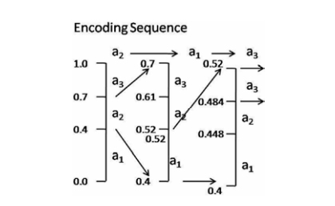
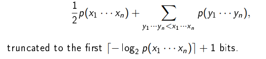
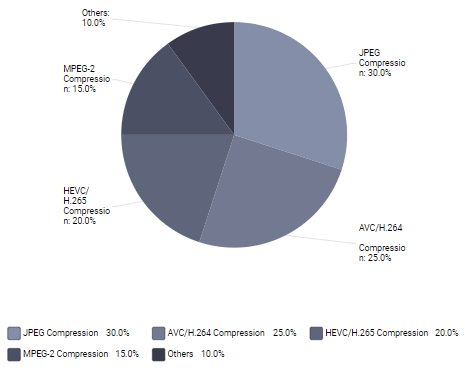
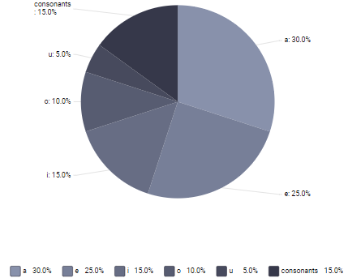

Arithmetic Coding
Arithmetic coding is a lossless data compression technique
that maps a sequence of symbols to a single fractional
number in the interval [0,1], which can then be represented
using fewer bits than the original symbols, thus reducing the
overall file size.
A fundamental concept in arithmetic coding, probability
distributions determine the likelihood of a symbol appearing
in the data stream and are used to calculate cumulative
probabilities for encoding.
Implementation of Arithmetic Coding
Encoding and Decoding Processes:
- Step 1: Symbol Probability Calculation The frequency of occurrence for each symbol in the input message is calculated and their corresponding probabilities are determined.
- Step 2: Cumulative Probability Calculation The cumulative probability distribution is calculated for each symbol based on the symbol probabilities.
- Step 3: Interval Mapping The input message is mapped to a single interval based on the cumulative probability distribution of the symbols
- Step 4: Re-normalization The interval is re-normalized after each symbol is encoded or decoded to maintain the accuracy of the probability distribution.
Image Compression Techniques
Let us consider a three letter alphabet A = a1, a2, a3 probabilities P(a1) = 0.4, P (a2) = 0.3. P (a3) = 0.3 The initial
sub-intervals are [0.0, 0.4), [0.4, 0.7),[0.7, 1.0). If the first
symbol encountered is, a2 then the sub-interval [0.4, 0.7) is
considered. If the next two symbols are a3 and, a1 then the
intervals get narrowed. This process is illustrated in Fig 9.
Any number within the final range[0.4, 0.448) can be used
to represent the sequence.

Types of Arithmetic Coding Algorithms
- A variant of arithmetic coding where the probability model adapts as the data is encoded or decoded.
- A method of entropy encoding where symbols are encoded as ranges, rather than as discrete values.
- A family of entropy encoding techniques that includes arithmetic coding as a special case.
- An adaptation of arithmetic coding that splits the encoding range into unequal partitions to more accurately represent the probability distribution.
The Mathematics
The arithmetic code of the sequence x1, x2, x3....xn can be defined in
the following way (we assume that the symbols come from the alphabet X= {a1, a2, a3....am})
Give the set of all possible sequences the lexiographic order (which
is generated by the relations αi < αj when i < j). The arithmetic
code of x1.....xn can be defined as the binary representation of

- The code employs the cumulative distribution function as a representation for all sequences.
- The allocation of bits to the code is directly proportional to the probability of x1 · · · xn
- The arithmetic code is uniquely decodable with the aforementioned bit allocation.
- The average number of bits per symbol approximates the entropy within a margin of 2/n.
- The formula is infrequently used to calculate the arithmetic code.
- The arithmetic code is computed incrementally
- Computation of the arithmetic code can be implemented using finite precision arithmetic, with existing implementations utilizing 32 bits.
- The probabilities are not predetermined; rather, they are incrementally adapted based on the statistical properties of the sequence.
Advantages
- Higher compression ratio: Arithmetic coding can achieve higher compression ratios than other techniques because it considers the probabilities of entire messages rather than just individual symbols.
- No need for a codebook: Arithmetic coding does not require a pre-built codebook like Huffman coding, making it more flexible and adaptable to different data sets.
- Better suited for large data sets: Arithmetic coding is better suited for compressing large data sets because it can handle long messages more efficiently than other techniques.
- Multiple messages in a single stream: Arithmetic coding can compress multiple messages into a single stream, reducing the overhead associated with transmitting or storing multiple compressed files.
Applications of Arithmetic Coding
Image and Video Compression with Arithmetic Coding

Text and speech compression pie chart data

Challenges
- Arithmetic coding is computationally expensive compared to other compression techniques which affect compression performance
- Arithmetic coding requires a high level of mathematical and programming knowledge which can make the implementation process complex.
- Arithmetic coding requires large amounts of memory to store the probability distribution and the encoded data which can be a challenge for resource-constrained devices.
- Arithmetic coding is highly sensitive to any errors or corruption in the input data, which can result in significant loss of information during compression.